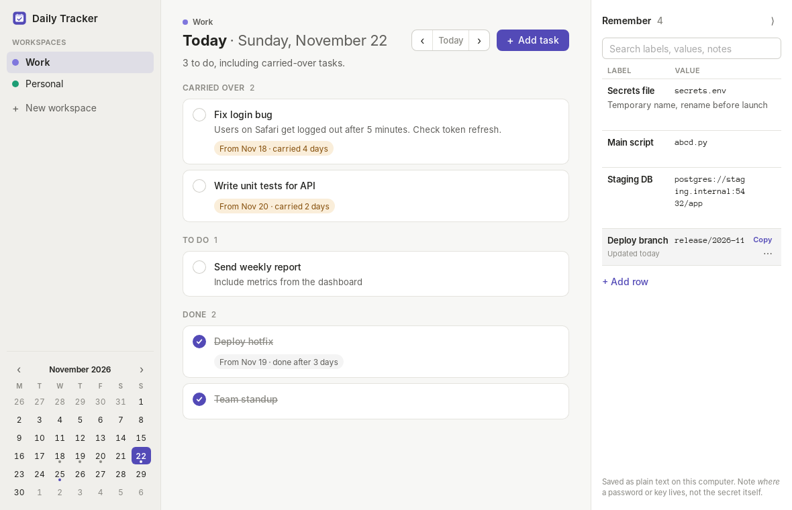

Plan tasks by date, get reminders that actually fire, track how long things take, and let unfinished work carry over by itself. Light, fast, and your data stays on your computer.
Download Daily Tracker
Pick a date, add a title and notes. Move between days with arrows or the calendar.
Didn't finish? It shows up in Today by itself, with its original date and how many days it's been carried.
Set as many times as you like. A notification plus a small window with Done, Snooze (any length) and Dismiss. Missed ones are summarised.
Start, pause, resume. See how long a task really took, even across days.
Keep Work, Personal, or anything else apart.
A permanent table for names, paths and decisions you don't want to dig for again.
Why the warning on first open? The app isn't signed with a paid Apple or Microsoft certificate yet. It's open source, and the installers are built by GitHub straight from the public code. You only need to confirm once. After that, Daily Tracker updates itself.